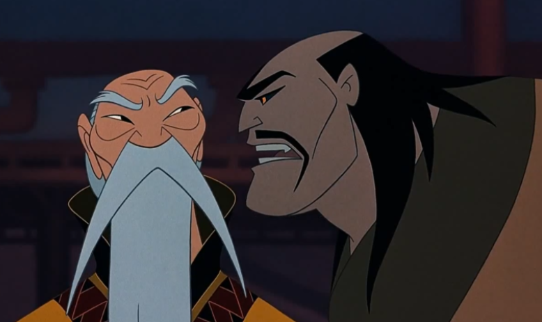

영화 '뮬란'의 이야기를 변형시켜서 소극장 관객 참여형 연극으로 활용할 수 있다.
연극 중에서 활용 방안을 '소극장 관객 참여형 연극'으로 선정한 이유는 다음과 같다.
1. 소극장 연극은 규모가 상대적으로 작기에 배우의 역량에 따라 극이 달라지고, 이야기 흐름의 유동성이 존재한다.
2. 소극장 연극은 관객과 호흡을 맞추기에도 용이하며, 관객이 호응을 토대로 극에 직접적으로 참여하는 데 유리하다.
3. 디즈니 고전 '뮬란'을 각색할 때 가장 중요한 포인트는 '그 당시 사회적 약자로 생각되었던 여성이 당당하게 자신의 주체성과'
능력을 발휘했다는 점'이라고 생각한다. 이를 연극과 접목시키면 무대 밑의 관객이 주체적으로 극을 이끌어나가는 방식으로 표현이 가능하다.
관객이 서사를 이끌어가려는 시도는 어렵지만 종종 있어 왔다. 실제로 대학로 연극 '쉬어매드니스'는 관객이 참여하는 추리형 연극으로,
관객의 추리에 따라 그날그날의 결말이 바뀌게 된다. '쉬어매드니스' 같은 관객 참여형 연극은 관객의 흥미도와 몰입도를 높이며,
동시에 극과 관객이 하나가 될 수 있게 한다는 장점을 지닌다. '뮬란'을 이런 관객 참여형 연극으로 만들 경우, 관객은 극을 통해서진정한 자기 자신을 찾는 시간을 지닐 수 있다.동시에 극과 줄거리에 영향을 끼칠 수 없다고 생각될 수 있는 관객이 '직접' 극에 영향을미친다는 점에서 뮬란처럼 '당당하게 자신의 주체성을 발휘'할 수 있는 기회를 얻게 된다.대학로의 코믹 추리 수사극 '쉬어매드니스'
실제로 네이버 웹소설 '마인드 헌터'는 독자의 댓글과 투표에 따라 매 이야기의 결말을 다르게 했다. 이는 스토리에서 수용자가 중요한 역할을 할 수 있다는 것을
보여준다. 네이버 웹소설에서 이러한 시도가 가능했던 이유는 작가와 독자가 내밀하게 이야기를 나눌 수 있는 창구가 마련되었기 때문이라고 볼 수 있다.
이러한 공간적 면모를 살려서 소극장에서 관객의 참여를 위주로 하는 연극을 시도해 본다면 분명히 관객의 주도적인 스토리가 탄생할 수 있을 것이라고 본다.
독자의 댓글로 이야기를 전개한 네이버 웹소설 '마인드 헌터'
'뮬란'을 관객 참여형 연극으로 할 때, 장르는 '추리 수사'로 할 예정이다. 추리라는 장르가 다른 사람들의 접근을 가장 잘 허용할 수 있기 때문이다.
또한 기존의 뮬란이 영웅 서사 느낌이었다면, 연극으로 활용할 때는 추리물을 중심으로 뮬란이 중국을 위험에 빠트린 범인을 잡는 것으로 하려고 한다.
이는 기존의 뮬란 스토리와 유사하면서도, '범인을 잡는다'라는 새로운 플롯 덕분에 사람들의 흥미를 더욱 끌 수 있으며 참여도를 높일 수 있다고 생각되기 때문이다.
아래는 생각해 놓은 연극 '뮬란'의 추리 수사극 줄거리이다.
황제 폐하의 옥쇄가 사라졌다!
오래 전부터 대대로 내려와 황권의 정당성을 상징하는 옥쇄. 그러나 어느 날 갑자기, 옥쇄가 사라졌다.
옥쇄를 훔쳤으리라고 생각되는 범인은 단 하나, 훈족. 그러나 그의 힘만으로 옥쇄를 가져가는 것은 역부족이다.
분명히, 이 안에 배신자가 있다!
옥쇄를 훔치는 것을 도운 배신자는 누구인가?
과연 뮬란은 배신자를 잡고, 옥쇄를 되찾아 절체절명의 중국을 위험에서 구할 수 있을 것인가?

황제를 위협하는 산유
극중에서 산유는 황제에게 옥쇄를 내놓으라고 말하며 그를 협박한다. 이를 토대로 '옥쇄'가 정당성을 상징하는 중요한 물건임을 알 수 있기에, 극을 이끌어가는 중요한 포인트를
옥쇄로 설정했다. 뮬란이 지혜와 기지를 주체적으로 발휘해 중국을 위험에서 구한다는 것은 관객이 뮬란이 되어서 직접 범인을 찾고 옥쇄를 구할 수 있도록 설정했고,
뮬란에게는 무슈와 복동이라는 조력자가 있었기에 무대 내에서는 유일하게 뮬란(관객)에게 단 한 번씩 어떤 진실이라도 말해주는 무슈와 복동이가 있다고 설정한다.
또한, 이야기는 항상 바뀌지만 기본적인 틀은 비슷하다. 뮬란이 진실에 가까워지게 되면서, 뮬란의 목숨을 노리는 암살자가 등장한다. 리샹은 이때 그녀를 구해주는 역할이다.
리샹이 그녀를 구해주게 되면서 리샹은 뮬란 시해 사건의 유일한 목격자가 되는데, 이때 리샹의 이야기를 들을지(목격자 진술) 아니면 기절한 암살자로부터 이야기를 들을지(취조)
관객은 선택할 수 있다. 이들의 이야기를 들으면서 범인을 찾아내는 것이 이 연극의 주된 플롯이다.
용의자는 총 7명이며, 관객은 이들의 이야기를 듣고 범인이 누구인지 추리해 나갈 수 있다. 각각의 관객들마다 생각하는 것이 다르기에 매번 극의 이야기가 다른 것이 핵심이다.
1. 뮬란과 같은 부대의 병사 : "나는 어제도 훈련했어, 너도 알잖아?"
- 수상한 점 : 분명히 어제도 훈련을 했었다. 그러나 옥쇄가 없어졌으리라고 생각되는 시간대에 그는 자리에 없었다.
2. 황제의 비서관 : "감히 내가, 어떻게 황제 폐하의 옥쇄에 손을 댈 수 있겠어?"
- 수상한 점 : 황제를 제외하면 옥쇄가 있는 위치를 아는 것은 오로지 그뿐이다.
3. 황궁 입구를 수호하는 병사 : "저는 항상 제 자리를 지키고 서 있었습니다."
- 수상한 점 : 원래는 황궁 입구를 둘 이상이 같이 지켜야 하나, 그날만큼은 그의 부탁으로 그 혼자 보초를 섰었다.
4. 부대의 대장 : "황제 폐하를 향한 충성만이 저를 움직이게 할 뿐입니다."
- 수상한 점 : 만리장성에서 보조 군사를 보내달라고 부탁했는데도, 그는 훈족과 약속한 바가 있으니 그럴 필요가 없다며 여러 번 거절했다.
5. 중국의 재상 : "내가 어찌 감히 하늘을 바라볼 수 있겠나?"
- 수상한 점 : 재상이 관할하는 지역은 훈족이 이번에 침입해 왔으리라고 생각되는 지역이다. 그러나 그는 훈족의 움직임에 대해 한 번도 보고한 적이 없다.
6. 황궁의 마굿간지기 : "저는 그냥 제 본분을 다 했을 뿐입니다!"
- 수상한 점 : 아픈 동생이 있으며, 옥쇄가 없어진 이후 궁인들을 전수 조사한 결과 예전부터 지속적으로 훈족에 돈을 보낸 사실이 밝혀졌다.
7. 황궁의 궁인 : "저는 그저 황제 폐하를 위했을 뿐입니다!"
- 수상한 점 : 옥쇄가 사라진 당일 황제의 방에 들어간 유일한 궁인이며, 조사 결과 황제의 방에 지독한 수면향을 피웠다는 사실이 드러났다.